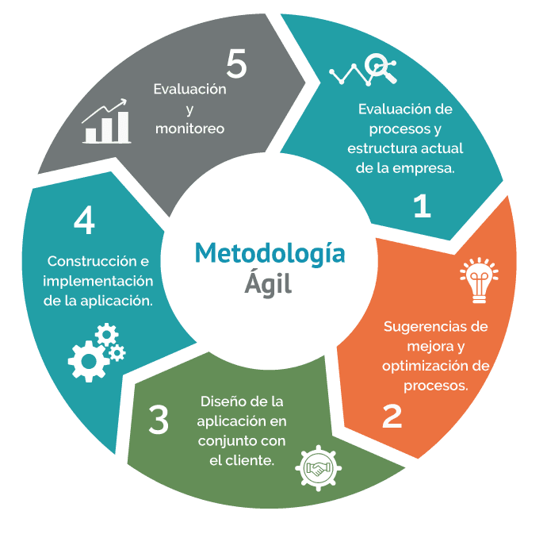
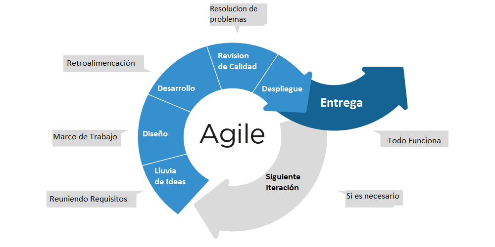

Ciclos de Vida de Desarrollo (SDLC)
Análisis y Diseño I
Undécimo A
Docente: Pablo Antonio Peña
San Pedro Sula
20 de julio del 2025
1. ¿Qué es un Ciclo de Vida de Desarrollo de Software (SDLC)?
El Ciclo de Vida de Desarrollo de Software (SDLC) es un proceso estructurado que guía la creación de un sistema de software, desde la concepción inicial hasta su retiro.
Importancia:
- Asegura la calidad del software.
- Permite gestionar la complejidad del proyecto.
- Reduce riesgos y costos a largo plazo.
- Mejora la eficiencia y la predictibilidad.
2. Modelo Cascada (Waterfall Model)
Es un enfoque lineal y secuencial donde cada fase debe completarse antes de que la siguiente pueda comenzar.
Fases:
Ventajas:
- Simple y fácil de entender.
- Fases claras y bien definidas.
- Adecuado para proyectos con requisitos estables.
Desventajas:
- Inflexible a cambios.
- Riesgos altos en etapas tardías.
- Poca interacción con el cliente.
3. Modelo Espiral (Spiral Model)
Un modelo iterativo y basado en riesgos que combina elementos del modelo cascada y del prototipado.
Fases Iterativas:
Ventajas:
- Excelente gestión de riesgos.
- Flexible y adaptable a cambios.
- Adecuado para proyectos grandes y complejos.
Desventajas:
- Más complejo y costoso.
- Requiere experiencia en gestión de riesgos.
- Puede ser difícil de controlar.
4. Modelos Ágiles (Agile Models)
Enfoques iterativos e incrementales que priorizan la flexibilidad, la colaboración y la entrega rápida de software funcional.
Principios Clave:
- Individuos e interacciones sobre procesos y herramientas.
- Software funcionando sobre documentación exhaustiva.
- Colaboración con el cliente sobre negociación contractual.
- Respuesta al cambio sobre seguir un plan.

Ejemplos: Scrum, Kanban, Extreme Programming (XP).
5. Modelo Scrum (Ejemplo Ágil)
Un framework ágil para gestionar proyectos complejos, enfatizando el trabajo en equipo, la rendición de cuentas y el progreso iterativo.
Elementos Clave:
- Sprints: Iteraciones cortas y de tiempo fijo (1-4 semanas).
- Product Backlog: Lista priorizada de funcionalidades.
- Sprint Backlog: Tareas seleccionadas para un sprint.
- Daily Scrum: Reunión diaria corta del equipo.
- Roles: Product Owner, Scrum Master, Equipo de Desarrollo.

6. Comparación de Modelos SDLC
| Característica | Cascada | Espiral | Ágil (Scrum) |
|---|---|---|---|
| Flexibilidad | Baja | Alta | Muy Alta |
| Gestión de Riesgos | Baja (al final) | Muy Alta (análisis y mitigación constante) | Alta (adaptativa) |
| Interacción Cliente | Baja (al inicio y final) | Media a Alta | Muy Alta (continua) |
| Tamaño Proyecto | Pequeños, bien definidos | Grandes, complejos | Cualquier tamaño, requisitos cambiantes |
| Enfoque Documentación | Alta | Media a Alta | Baja (software funcionando) |
7. ¿Cuándo Elegir Cada Modelo?
Modelo Cascada:
Proyectos pequeños y bien definidos, con requisitos estables y poca incertidumbre. Cuando el cliente tiene una visión clara desde el inicio.Modelo Espiral:
Proyectos grandes y complejos con alto riesgo. Cuando los requisitos son cambiantes o poco claros al inicio y se necesita una evaluación continua de riesgos.Modelos Ágiles (Scrum/Kanban):
Proyectos donde los requisitos son altamente cambiantes, se necesita una entrega rápida y frecuente de valor, y se fomenta una alta colaboración con el cliente.
Ejercicio Práctico: Selección de Modelo SDLC
Discute y justifica cuál modelo SDLC sería el más apropiado para cada escenario:
Escenario 1:
Una aplicación para gestionar las calificaciones de una sola clase (requisitos claros y estables).Escenario 2:
Una aplicación de red social para estudiantes que necesita actualizaciones constantes y nuevas funciones.Escenario 3:
Un sistema de reserva de libros para la biblioteca de la escuela, donde los requisitos pueden cambiar ligeramente a medida que se usa.
Prepárense para argumentar sus elecciones en clase.
Asignación de Tareas
1. Elaborar un cuadro comparativo de los modelos SDLC (Cascada, Espiral, Ágil) incluyendo sus fases, ventajas y desventajas.
2. Para un caso práctico dado (que se proporcionará en clase o se definirá), argumentar la selección de un modelo SDLC específico, justificando por qué es el más apropiado.
Fecha de entrega: 27 de julio del 2025
Ponderación: 5%